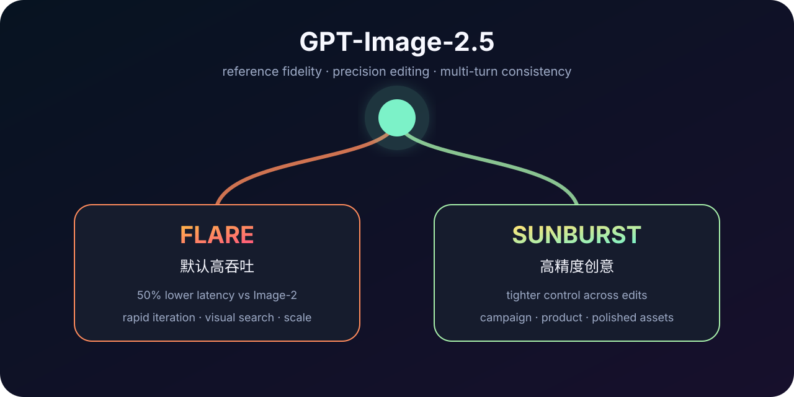

FLARE
快速、高质量的日常图像生成；官方称质量高于 GPT-Image-2，延迟降低 50%。
rapid iterationvisual searchhigh volume一个 family，两种服务位：Flare 做默认高吞吐，Sunburst 做高精度编辑。代际重点从“生成一张好图”转向“在多轮生产流程里只改对的地方”。

快速、高质量的日常图像生成；官方称质量高于 GPT-Image-2，延迟降低 50%。
rapid iterationvisual searchhigh volume更严格的多轮编辑与创意控制，面向 production-ready campaign、商品图和精修资产。
precision editsbrand fidelitypremium workflowText input · Image input · Image output / MTok。两款计费一致，选择由 latency / precision 决定。
Sunburst 在官方 adversarial set 上 Unsafe Generation Presented；Flare 1.41%，Images 2.0 baseline 1.64%。
不要只做单张审美投票。保存参考图、每轮编辑指令、历史版本、未编辑区域和最终用途；同时报告 edit locality、identity consistency、layout drift、文字准确率与 latency-to-accepted-image。